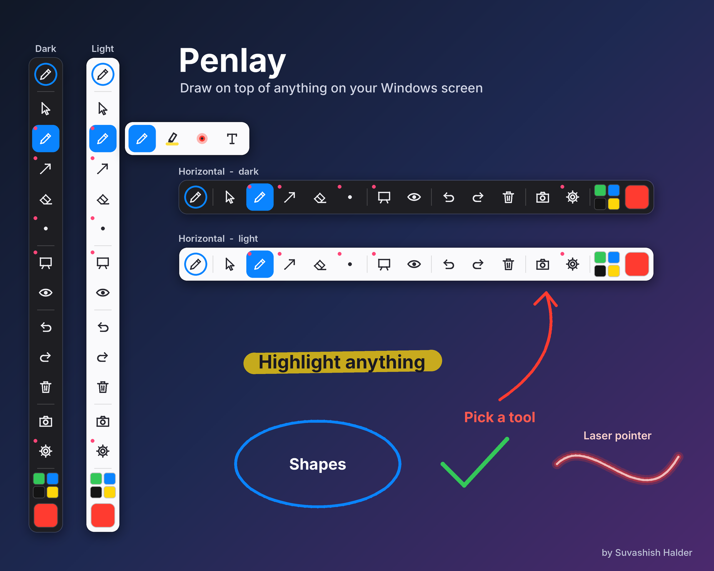

Everything you need to point things out
Built for live trading sessions, lessons, screen recordings and calls, where you need to show exactly what you mean.
-
Pen and highlighter
Smooth strokes, and a see-through marker that never hides what's underneath.
-
Laser pointer
A glowing trail that fades on its own, so there's nothing to clean up afterwards.
-
Lines, arrows and shapes
Hold Shift for straight lines, perfect squares and perfect circles.
-
Text
Click anywhere and type. Shift+Enter for a new line, Ctrl+V to paste.
-
Click-through mode
Press Esc and your drawings stay on screen while you keep using your apps.
-
Whiteboard and blackboard
One click turns your screen into a blank page for sketching an idea.
-
Screenshots with your drawings
Saved to your Pictures folder and copied to the clipboard, ready to paste.
-
Stays out of your way
Hides to the tray, remembers your settings and works across every monitor.
Keep your hands on the keyboard
Every tool has a shortcut, and the main ones work from any app.
Anywhere on Windows
These work even when Penlay is in the background.
| Ctrl+Shift+D | Start or stop drawing |
| Ctrl+Shift+L | Laser pointer |
| Ctrl+Shift+H | Hide or show drawings |
| Ctrl+Shift+X | Clear all drawings |
While drawing
Single keys switch tools instantly.
| P H L T | Pen, highlighter, laser, text |
| N A R O | Line, arrow, rectangle, ellipse |
| E | Eraser |
| 1 to 8 | Colours |
| W B | Whiteboard, blackboard |
| Ctrl+Z Ctrl+Y | Undo, redo |
| Ctrl+S | Screenshot |
| Esc | Back to your mouse |
Up and running in a minute
No installer, no account, no settings to configure.
Download Penlay.zip
About 50 KB, from the latest release.
Unzip and open Penlay.exe
Keep it anywhere you like: Desktop, Documents or a USB drive.
Press Ctrl + Shift + D
Start drawing. Press Esc when you want your mouse back.
Windows may show "Windows protected your PC" the first time, because Penlay isn't code-signed yet. Click More info, then Run anyway. You only need to do this once.
Questions
Is Penlay really free?
Yes. It's free for personal and commercial use, with no ads, trials or accounts.
Does it collect any data?
No. Penlay never connects to the internet. Screenshots stay on your PC in Pictures\Penlay, and settings are stored in %AppData%\Penlay.
Why does Windows warn me before it opens?
Windows shows that message for new apps that aren't code-signed. Click More info, then Run anyway. After the first time it opens normally.
What do I need to run it?
Windows 10 or 11. Penlay uses .NET Framework 4.x, which is already part of Windows 10 and 11. On older versions, install .NET Framework 4.8 first.
How do I close it completely?
The toolbar button hides Penlay to the system tray. To quit, right-click the Penlay icon in the tray and choose Exit Penlay.
Does it work on Mac or Linux?
Not at the moment. Penlay is made for Windows.